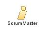

| Role: ScrumMaster |
 |
|
Relationships
 |
|
| Additionally Performs | |
|---|---|
Main Description
The ScrumMaster:
|
Staffing
| Assignment Approaches | The ScrumMaster role is typically filled by a project manager or a technical team leader but can be anyone. |
|---|
Key Considerations
The ScrumMaster:
|
This program and the accompanying materials are made available under the
Copyright © 1998--2008 Mountain Goat Software. All rights reserved. |